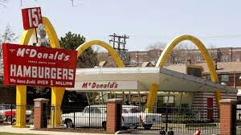
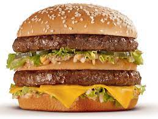
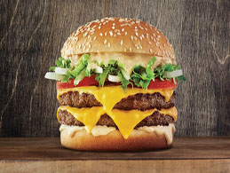
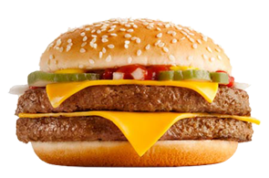

La historia de McDonald’s y la de sus famosos combos y cajitas felices es también una historia de innovación y perseverancia para los negocios Hoy en día, esta marca norteamericana es sinónimo de comida rápida y de franquicia exitosa en cualquier parte del planeta, pero pocas personas conocen la verdadera historia de McDonald’s. Esto no siempre fue así. De hecho, el éxito actual es el resultado de la combinación y el trabajo de varias mentes innovadoras y emprendedoras que supieron diseñar un método sin precedentes para servir hamburguesas y papas fritas, y luego llevar esa visión al mundo entero. El creador de la cadena, Ray Kroc, fue retratado en numerosos libros y películas como un gran emprendedor que además logró el éxito empresarial muy tarde en su vida –a los 52 años de edad- y tras haber fracasado muchas veces en cuanto a su vida profesional. Por eso la historia de McDonald’s y la de sus famosos combos y cajitas felices es también una historia de innovación y perseverancia
La historia de McDonald’s comienza con un simple emprendimiento familiar a cargo de dos hermanos.
En 1940, cuando los hermanos McDonald abrieron su restaurante original en San Bernardino (California, Estados Unidos), se trataba de un “Bar-B-Q” que ofrecía 25 platos diferentes. Por aquel entonces, se denominaba McDonald’s Famous Barbecue.
Pero todo cambia con la llegada de la Segunda Guerra Mundial a tierras norteamericanas.
Michael Stern, el coautor de Encyclopedia of Pop Culture, indica que una vez finalizados los enfrentamientos, los americanos tenían un sentimiento de “hemos luchado, hemos ganado, ahora nos toca la buena vida. Y por definición, esa buena vida incluye velocidad, en términos de obtener lo que se quiere, cuando se quiere”.
Por eso, los hermanos decidieron cerrar el restaurante original y hacer cambios para acelerar el servicio en su nuevo punto de venta:
Al relatar la historia de McDonald’s en su libro “McDonald’s: Detrás de los arcos”, John F. Love señala que los hermanos trabajaron con un artesano local para inventar un nuevo tipo de espátula, un nuevo dispensador que arrojaba la misma cantidad de salsa de tomate y mostaza cada vez, y una plataforma giratoria para acelerar el proceso de montaje de hamburguesas, pan y condimentos. Lo que Henry Ford había hecho por los automóviles, los hermanos McDonald lo hicieron por las hamburguesas y las papas fritas: desglosaron los procesos en tareas simples y repetitivas. Fue un proceso fundamental en la historia de McDonald’s. Estos cambios fueron fundamentales para que en diciembre de 1948 surgiera el primer restaurant de la marca como lo conocemos hoy a través de la historia de McDonald’s.
La historia de McDonald’s despega de la mano de estos nuevos conceptos de comida rápida y autoservicio.
El éxito de la historia de McDonald’s comenzó a resonar en los medios de comunicación en Norteamérica y así es como en 1952, los hermanos vendieron su primera franquicia a Neil Fox en Phoenix, ocasión que aprovecharon para hacer un prototipo de cómo serían los futuros restaurantes McDonald’s. En la historia de McDonald’s ese se conoce como el momento de creación de los famosos arcos amarillos que se transformarían con los años en el símbolo de la multinacional. Fue entonces en donde entró en escena el visionario Ray A. Kroc. En la historia de McDonald’s se relata que el empresario quiso ingresar a la Cruz Roja pero la guerra terminó antes de que completara sus estudios. Luego de eso trabajó como pianista y vendedor de vasos de papel antes de dedicarse a las batidoras. Él era el representante exclusivo de la marca de batidoras “Prince Castle Multimixer” por lo que recorría restaurantes en San Bernardino. Mientras muchos de ellos estaban cerrando sus puertas, la historia de McDonald’s relata que los hermanos le encargaron ocho máquinas en 1954. Esto llamó la atención del comerciante, quien inmediatamente concurrió a ver qué estaba ocurriendo en ese pequeño local a unos 80 kilómetros de Los Ángeles del cual todos hablaban. Al acercarse al lugar, Kroc quedó sorprendido por la efectividad con la que se trabajaba allí y la rapidez de su operación: se concentraban en pocos productos y eso les permitía mantener la calidad en cada paso sin perder tiempo. Sin embargo, la idea de invertir en más locales no era algo que interesara a los hermanos fundadores. La historia de McDonald’s cuenta que Mac le explicó a Kroc por qué no querían hacer más: “Todas las tardes, nos sentamos en el porche y miramos la puesta de sol. Es tranquilo”.
|  |  |  |
| Big Mac | Grand Tasty turbo bacon | Cuarto de Libra |